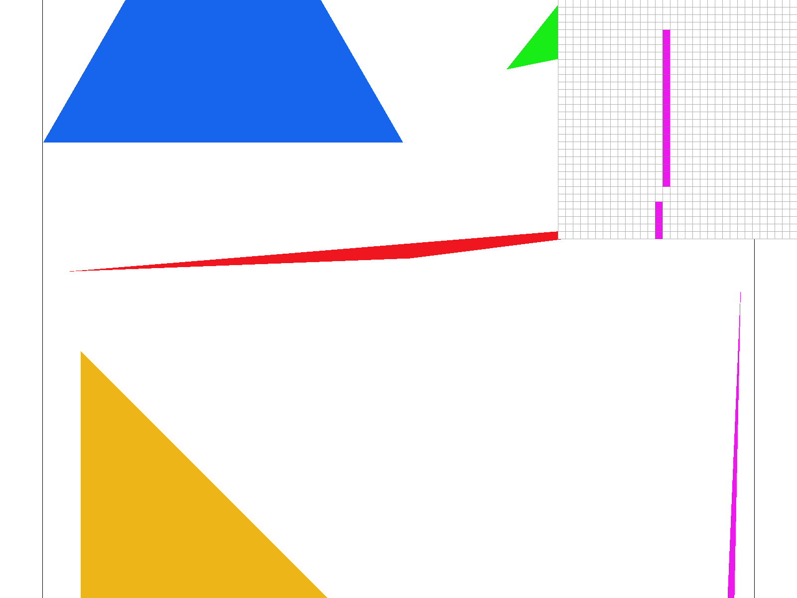
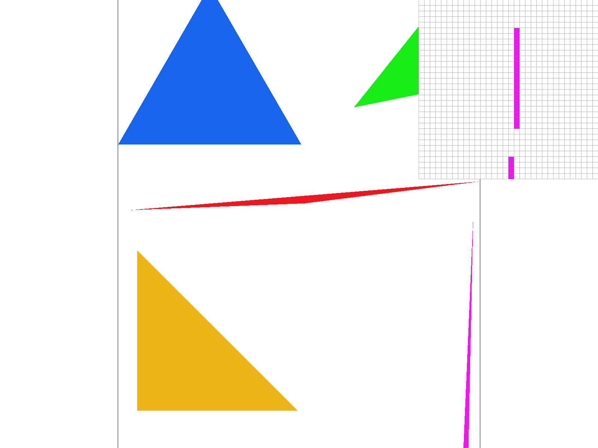
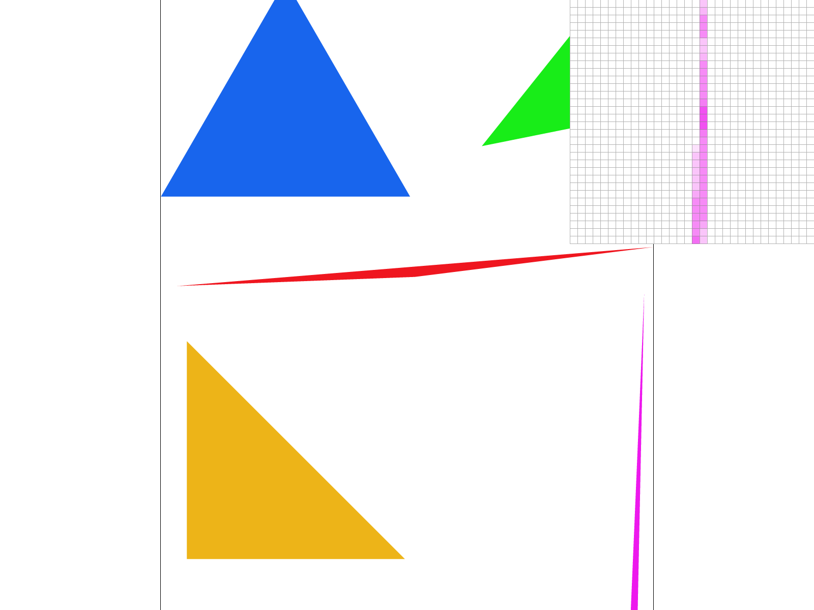

My triangle rasterizer decides, for each candidate pixel, whether the center of that pixel lies inside the triangle, and fills it if so. Sample points sit at half-integer coordinates, so pixel \((x, y)\) is tested at \((x + 0.5,\ y + 0.5)\).
The inside test uses three edge functions. For an edge from vertex \(A\) to vertex \(B\) and a sample point \(P\), \[ E_{AB}(P) = (P_x - A_x)(B_y - A_y) - (P_y - A_y)(B_x - A_x). \] This is the 2D cross product of the edge direction with the vector from \(A\) to \(P\). It is zero when \(P\) is exactly on the line through \(A\) and \(B\), and its sign tells which side of the line \(P\) is on. I evaluate the three edges going around the triangle in order, \(P_0 \to P_1\), \(P_1 \to P_2\), \(P_2 \to P_0\). A sample is inside the triangle when all three values have the same sign.
Two details fall out of this test. First, the SVG vertices may be listed clockwise or counter-clockwise, which flips the sign of every edge function. Instead of reordering vertices, I accept a sample when the three values are either all \(\geq 0\) or all \(\leq 0\), so both winding orders work with no extra work. Second, using non-strict comparisons means a sample that lies exactly on an edge counts as inside, which is what the spec asks for.
Once a sample passes, I call fill_pixel(x, y, color) to write the color into the sample buffer. At the end of the frame,
resolve_to_framebuffer() converts the float colors in the sample buffer into the 8-bit RGB framebuffer.
Before looping, I compute the axis-aligned bounding box of the triangle from the min and max of the three x values and the three y values. Both corners are floored to get inclusive integer pixel indices, and both are clamped to \([0, \text{width}-1]\) and \([0, \text{height}-1]\) so triangles that hang off the screen never index outside the buffer. The double loop then visits only pixels in that box, so the work is proportional to the area of the bounding box rather than the area of the framebuffer. This is exactly the baseline the spec requires. The outer loop runs over rows and the inner loop over columns, so writes into the sample buffer are sequential in memory.

basic/test4.svg at 1 sample per pixel, with the pixel inspector over the tip of the magenta sliver.
The triangle is narrower than a pixel there, so some pixel centers miss it and the sliver breaks up into disconnected
fragments. This is the aliasing that Task 2 addresses.
Supersampling renders the scene at a higher resolution than the screen and then averages back down. Instead of testing one point per pixel, I test an \(n \times n\) grid of points inside every pixel, where \(n = \sqrt{\text{sample\_rate}}\), and keep every result. At the end of the frame, each pixel's final color is the mean of its samples. A pixel that is fully inside a triangle averages to the triangle color, a pixel fully outside stays the background color, and a pixel on the edge blends the two in proportion to how many of its samples the triangle covered.
The only data structure is sample_buffer, a std::vector<Color> of floating-point colors
that holds every sample for every pixel. Its size is width * height * sample_rate. I store all of a pixel's samples
contiguously, so sample \(s\) of pixel \((x, y)\) lives at index
\[ (y \cdot \text{width} + x) \cdot \text{sample\_rate} + s, \qquad s = j \cdot n + i, \]
where \(i\) and \(j\) are the sub-column and sub-row inside the pixel. Keeping a pixel's samples adjacent makes the averaging
step a short loop over consecutive memory.
With one sample per pixel, a pixel is either entirely inside or entirely outside a triangle, so edges are stair-stepped and any feature thinner than a pixel can be missed entirely. Supersampling approximates the true area coverage of each pixel, which is the same as applying a box filter to the high-resolution image before downsampling. Edges become smooth gradients instead of hard steps, and thin features leave a faint trace in every pixel they touch instead of vanishing when they slip between sample points.
set_sample_rate and set_framebuffer_target now resize sample_buffer to
width * height * sample_rate. Both must do this because either can be called after the other.rasterize_triangle gained two inner loops over \(i, j \in [0, n)\). The sample position is
\((x + \frac{i + 0.5}{n},\ y + \frac{j + 0.5}{n})\), the three edge tests from Task 1 run unchanged on that point, and a hit
writes the color directly into the sample's slot in sample_buffer. At \(n = 1\) this reduces exactly to Task 1.fill_pixel, used by points and lines, now writes the same color into all sample_rate
slots of the pixel. Without this the black canvas border, which is drawn with rasterize_line, would be averaged
against white samples and turn gray.resolve_to_framebuffer sums each pixel's samples, multiplies by
1 / sample_rate, then converts each channel from a float in \([0, 1]\) to an 8-bit value in
rgb_framebuffer_target.
clear_buffers did not need to change since it already fills the whole vector.
|
 |
|
 |
The pixel inspector is over the same spot on the magenta sliver in all three. At rate 1 every pixel is either full magenta or white, and the sliver breaks into disconnected fragments where it is thinner than a pixel and no pixel center lands inside it. At rate 4 each pixel has four chances to hit the triangle, so the gaps close and the edge pixels take on intermediate pinks depending on whether one, two, or three of their samples were covered. At rate 16 the sliver is continuous and its edges fade smoothly from magenta through several shades of pink to white, because each pixel's color now tracks the fraction of its area the triangle actually covers.